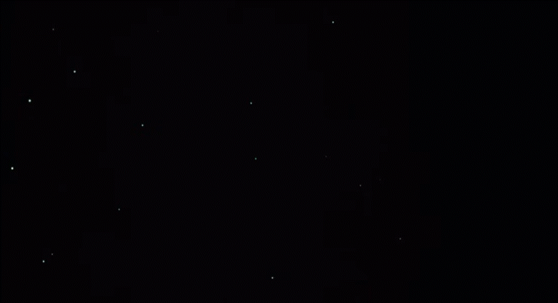
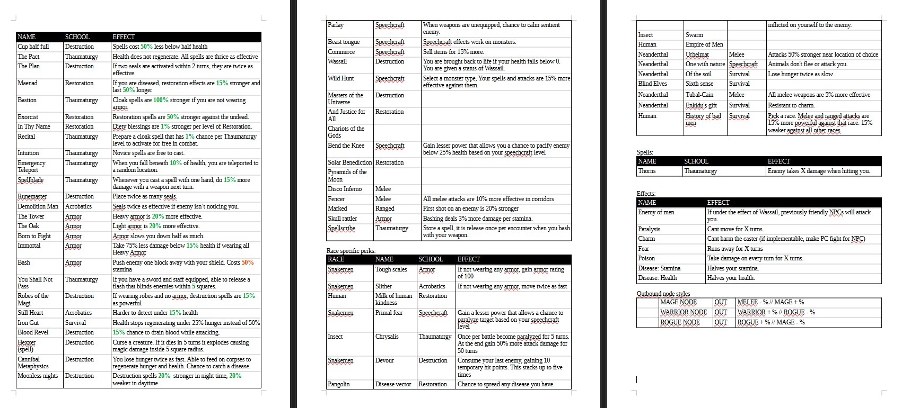

Darkstar DevLog
Auto-cannibal apotheosis
WASD + QR - Movement / R - Attack / I - Pathfinding data / U - switch level
Before starting a new project I had to take moment to notice the things I've been attracted to in recent years. Animism, ecology, systems...something along those lines. How living things reproduce themselves and their conditions to live. I'm not the first nor last person to make the connection that ideologies are like living things themselves...
I often think about how in order for our current system to reproduce itself it needs to appropriate desire, and to do so it must render everything as an object of that desire in it's pornographic absolute. A glass of orange juice is not simply a refreshing drink but a perfectly rendered orange wave that promises some impossible satisfaction or a change in the consumers personality. It's not just a drink, it's an identity technology.
I got lost in the sauce there! How is this related to my Dungeon Crawler??
Tall black spires populate the horizons of planet Sator. "An artifice of the local mages" most of the population will have you know. Others, more rational, will point you to the mines where the black stone is gathered from, "A fortress for the high lords" they say. Rumours have that the towers are populated with strange inverted beings and are the final resting place of many adventurers looking for glory or treasue. "Blood seeps into the stone then binds it..."
The sky above Sator births a non-light. Dark Star.
What if a planet became envious of it's star and it's life giving power? What would this planet do to become a second star? Would it be able to find a way to extract out of itself some source of power with such fever that it destroys itself? Am I complicit in the unmaking of world?
Spoiler
Darkstar is Sator. It appears in the sky as a hyperstitioned future object that through the process of "temporal autopoiesis" tries to create the conditions of its existence. The extraction of magical black stone is used to create towers which generate the in-game desire to engage with the world on its own terms. Spilling blood empowers its magic (In-game magic uses your health bar!). It's final goal to overweight the planet and collapse it into a second star, an anti-christ like entity.
Try out my small javascript demo! It has some simple enemy AI and pathfinding too. When you clear all of the monsters you will be transported to a new map
11/9/2024"Talk to the bomb."

I've been dreaming up an RPG for a while now. There's nothing more delicious to my mind than indulging in a 10 year project to create a personally tailored sci-fi fantasy world that is unrelateable to anyone but me. It's the kind of things the wizards who made Dwarf Fortress or Caves of Qud are all about. I've always aspired to be these kinds of people.
I have bits and pieces of this new world in me... I am not completely clear on it yet. My foremost interest is pictures and systems. RPGs, Dungeon Crawlers, Roguelikes, all of these games have a network of systems that couple together to generate mechanics and dynamic living worlds. You and your Avatar are given an opportunity to touch this world through your allowed actions and if the world is really living, it reacts to your input and incorporates it into its machinery.
These systems can also generate pictures, this an area I want to explore.
In college I was very much into procedural generation for illustration. The technical premise of this project is to create a game that emphasizes the realitionship of interal game systems and how the game screen presents itself to the player. My first goal is to create a simple map that uses a players cone of vision to generate a fake 3D world with pre-rendered Blender images. This in it's core is the spirit of the project, using data to illustrate and do graphic storytelling.
I am also trying to explore some other areas regarding character building and mechanics. I get deeply involved with games like Daggerfall where I think about my character before hand, imagine their backstory and what kind of skills they might have before starting my journey. I want to create a malleable system that allows for character creation where players can make up builds I hadn't even dreamt of and find synergies between skills that make their builds feel unique, clever, and also carry a little bit of inherent character flaw as a part of the package. I want the choice of your species, religion and skills interact and matter to the system...

Perk ideas
Big dreams! I know! I am taking it slow for now. Here is a perk system inspired by the recently popular visual coding node networks. I feel theres something really fun hiding here and Im excited to explore more. Buggy perk system mockup. Try it out!
11/9/2024